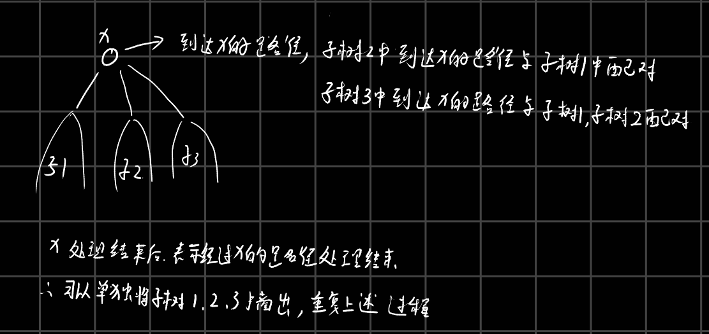
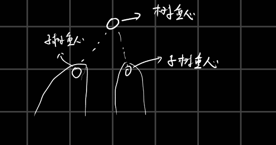

题意
寻找树上是否存在一个长度为k的路径，树中节点有n(n < 1e4)个，有m(m
< 100)个查询。
题解
路径查询问题，一种暴力的思路如下：
分析路径，假设树为一个有根树，那么我们要查询的路径有两种情况，要么这条路径经过当前树的根节点，要么不经过当前根节点在子树中，所以暴力的方式可以这样子，对于当前的树，记录以根节点为结尾的路径情况，将经过根节点的路径根据所属不同子树进行分类（因为需要后续拼接，拼接的路径需要在不同子树中），根节点的路径计算完之后，然后将子树提出，继续使用上述方法进行处理。

但是分析上述时间复杂度可以知道，如果树的形状为链状，由于一个节点的处理时间与树的大小有关，那么链式处理情况为\(n + (n - 1) + ... + 1 = \frac{n(n +
1)}{2}\)，很明显会超时。
所以为了更加高效的暴力，可以使用点分树的方案，点分树可以用来处理路径，点分树的思路是这样的，在处理一颗树时，首先选择他的重心（重心位置为根时，其子树规模最大值要小于其他位置为根时子树规模最大值），这样的目的是为了后续处理子树时子树的规模能更小，至少会减半。
减半之后，当处理完当前树的重心根节点后，后续处理子树的时候可以将子树当成一个独立的树，因为子树与其他树的路径需要经过重心，但是重心的相关信息已经计算完了，所以单独计算子树内部信息就可以了，这个计算过程可以继续使用上述思路，寻找子树的重心，然后统计信息。由于重心与子树重心相连形成一个新的树，树高为O(logn),每层树的节点数量为n，所以时间复杂度为O(nlogn)

zhong_xin_shu
这就是大概的处理思路。
但是这道题如果将树建立完毕之后，再进行节点信息统计，会导致内存有一些问题（nlogn的内存占用按理说不应该会发生内存超限），所以这里对节点信息进行离线处理，对每个节点处理之后立即进行查询的离线判断。
代码如下： 代码有一些问题，这里
void get_gra(int posi,int root,int total_size){//,int &zx,int
min_element /* = n*/){ // 注意这个位置，zx的引用会导致程序变慢
递归函数里面有这个引用会导致时间很长，在一组数据中没加应用和加上引用的时间分别为0.04s和4s，差距很大。
1
2
3
4
5
6
7
8
9
10
11
12
13
14
15
16
17
18
19
20
21
22
23
24
25
26
27
28
29
30
31
32
33
34
35
36
37
38
39
40
41
42
43
44
45
46
47
48
49
50
51
52
53
54
55
56
57
58
59
60
61
62
63
64
65
66
67
68
69
70
71
72
73
74
75
76
77
78
79
80
81
82
83
84
85
86
87
88
89
90
91
92
93
94
95
96
97
98
99
100
101
102
103
104
105
106
107
108
109
110
111
112
113
114
115
116
117
118
119
120
121
122
123
124
125
126
127
128
129
130
131
132
133
134
135
136
137
138
139
140
141
142
143
144
145
146
147
148
149
150
151
152
153
154
155
156
157
158
159
160
|
#include<bits/stdc++.h>
using namespace std;
#define ll long long
#define DEBUG0
const int mod1 = 1e9 + 7;
const int mod2 = 998244353;
const int maxx = (int)1e4 + 10;;
int dis[maxx];
int ans[maxx];
int cut[maxx];
int fa[maxx];
int check[maxx];
int n,m;
int read()
{
int f=1,x=0;
char ss=getchar();
while(ss<'0'||ss>'9'){if(ss=='-')f=-1;ss=getchar();}
while(ss>='0'&&ss<='9'){x=x*10+ss-'0';ss=getchar();}
return f*x;
}
struct Edge{
int to,l;
};
Edge G[maxx<<1];
int head[maxx];
int next_[maxx<<1];
int size[maxx];
void add_edge(int u,int v,int w,int edge_num){
next_[edge_num * 2 + 1] = head[u];
next_[edge_num * 2 + 2] = head[v];
head[u] = edge_num * 2 + 1;
head[v] = edge_num * 2 + 2;
G[edge_num * 2 + 1] = Edge{v,w};
G[edge_num * 2 + 2] = Edge{u,w};
}
int zx;
int min_elements;
void get_gra(int posi,int root,int total_size){
if(root == -1){
total_size = size[posi];
}
size[posi] = 1;
int max_element = 0;
for(int i = head[posi];i;i = next_[i]){
int next_posi = G[i].to;
if(cut[next_posi] == 1 || root == next_posi)continue;
get_gra(next_posi, posi,total_size);
max_element = max(max_element, size[next_posi]);
size[posi] += size[next_posi];
}
max_element = max(max_element, total_size - size[posi]);
if(min_elements > max_element){
zx = posi;
min_elements = max_element;
}
}
int justify[10000001];
int dis_te[maxx];
int tot;
int tot_pre;
void dfs_cal(int posi,int root){
if(root == -1){
dis[posi] = 0;
tot = 0;
tot_pre = 0;
justify[0] = 1;
}
for(int i = head[posi];i;i = next_[i]){
if(G[i].to == root || cut[G[i].to] == 1)continue;
dis[G[i].to] = dis[posi] + G[i].l;
if(dis[G[i].to] > (int)1e7)continue;
dis_te[tot++] = dis[G[i].to];
dfs_cal(G[i].to,posi);
if(root == -1){
for(int k = 0;k < m;k++){
if(ans[k] == 1)continue;
for(int j = tot_pre;j < tot;j++){
if(check[k] - dis_te[j] < 0)continue;
if(justify[check[k] - dis_te[j]] == 1){
ans[k] = 1;
}
}
}
for(int j = tot_pre;j < tot;j++)
justify[dis_te[j]] = 1;
tot_pre = tot;
}
}
if(root == -1){
for(int i = 0;i < tot;i++){
justify[dis_te[i]] = 0;
}
tot = 0;
tot_pre = 0;
}
}
int dfs(int posi)
{
int g_posi,temp = n + 1;
min_elements = n + 1;
get_gra(posi,-1,n);
g_posi = zx;
dfs_cal(g_posi,-1);
cut[g_posi] = 1;
for(int i = head[g_posi];i;i = next_[i]){
if(cut[G[i].to] == 1)continue;
dfs(G[i].to);
}
return g_posi;
}
int main()
{
cin>>n>>m;
memset(head,0,sizeof(head));
for(int i = 0;i < n - 1;i++){
int u,v,w;
u = read();
v = read();
w = read();
u--;
v--;
add_edge(u,v,w,i);
}
for(int i = 0;i < m;i++){
check[i] = read();
if(check[i] == 0)ans[i] = 1;
}
size[0] = n;
dfs(0);
for(int i = 0;i < m;i++)
if(ans[i]){
printf("AYE\n");
}
else {
printf("NAY\n");
}
return 0;
}
|